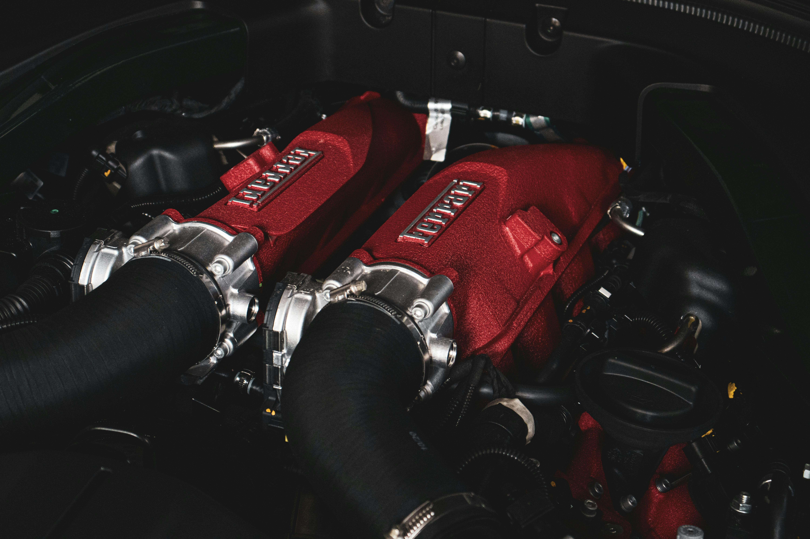

En el susurro del asfalto y el rugido de los pistones, habita el alma de las ruedas y motores. Son más que piezas ensambladas; son poesía en movimiento, el canto mecánico de quienes buscan conquistar horizontes. La rueda, círculo eterno, símbolo de perfección y continuidad, es la primera musa del viaje. Sobre su curva infinita descansa la promesa de caminos aún por recorrer, mientras el motor, con su latido profundo y constante, despierta la pasión del movimiento. Juntos, son una sinfonía: fuerza y gracia, velocidad y equilibrio. Cada giro de una rueda es un paso hacia lo desconocido, cada explosión en un motor es un grito de libertad. Nos invitan a soñar con carreteras que se pierden en el horizonte y con la posibilidad de ser dueños del viento y el tiempo. Así, ruedas y motores no solo nos llevan de un lugar a otro; nos conectan con el espíritu del viaje, con la esencia de avanzar, siempre adelante, siempre hacia el infinito.
